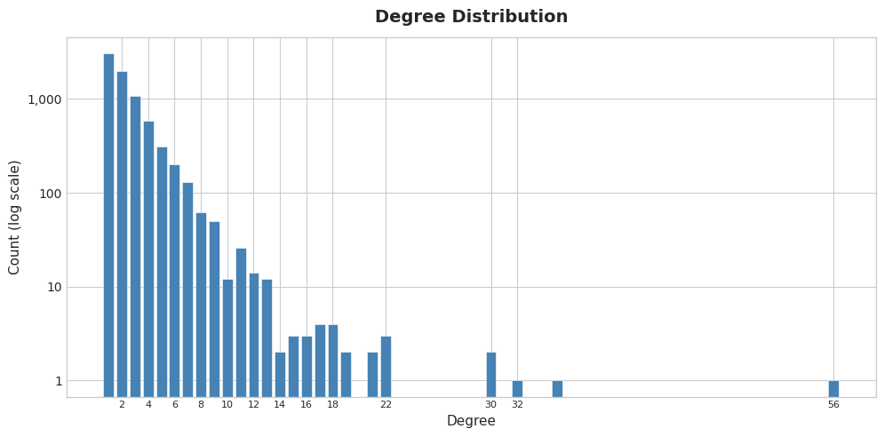
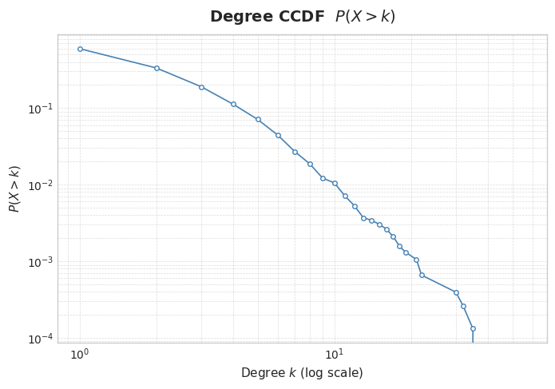

import pandas as pd
from pathlib import Path
import networkx as nx
import collections
import matplotlib.pyplot as plt
import numpy as np
import jsonTrayectoriasAfro Network Description
These are operations that help to describe the Trayectorias Afro network overall shape
Dependencies
Helper functions
Design notes
Connected component strategy
Several metrics cannot be computed on the full graph and require a connected subgraph. Two different subgraphs are used depending on the metric:
| Subgraph | Function | Used for |
|---|---|---|
| Largest (Weakly) Connected Component — LCC | _get_lcc |
lcc_size — structural measure of overall reachability |
| Largest Strongly Connected Component — LSCC | _get_lscc |
average_path_length, diameter — require that every node can reach every other node via directed paths |
For undirected graphs both functions return the same thing (the standard LCC).
For directed graphs (e.g. sub relations), weak connectivity only guarantees a path exists if you ignore edge direction, so path-based metrics would raise NetworkXError: Graph is not strongly connected. The LSCC is used instead, and both average_path_length and diameter report computed_on_nodes alongside their value so it is always clear how much of the graph the metric actually covers.
sujeto_col semantics (pending backend rename)
In relaciones_personas.csv, the column persona_sujeto_idno currently stores the owner/enslaver (the dominant party), not the enslaved/subordinated person as the name might suggest. Until the upstream data is corrected, passing sujeto_col='persona_sujeto_idno' to graph_description treats that column as the edge source (owner → subject).
def describe_cent(centrality_cal: dict, all: bool = False) -> dict:
"""Simple function, just to perform basic description and format the output to a dict"""
keys = []
values = []
for k,v in centrality_cal.items():
keys.append(k)
values.append(v)
cent = pd.DataFrame({'persona': keys, 'centrality': values})
description = cent.describe().to_dict()
if all:
return description['centrality']
return {
'mean': description['centrality'].get('mean'),
'std': description['centrality'].get('std'),
'min': description['centrality'].get('min'),
'max': description['centrality'].get('max')
}
## Networkx helper functions
_STYLE = 'seaborn-v0_8-whitegrid'
def av_degree(G):
return sum(dict(G.degree()).values()) / G.number_of_nodes()
# --- Degree histogram ---
def degree_dist(G, subgroup: str|None, save: bool = True, report_dir: str = 'report'):
degree_sequence = sorted([d for n, d in G.degree()], reverse=True)
degreeCount = collections.Counter(degree_sequence)
deg, cnt = zip(*degreeCount.items())
suffix = f'_{subgroup}' if subgroup else ''
with plt.style.context(_STYLE):
fig, ax = plt.subplots(figsize=(10, 5))
ax.bar(deg, cnt, color='steelblue', edgecolor='white', linewidth=0.4)
ax.set_yscale('log')
ax.set_title(f'Degree Distribution{suffix}', fontsize=14, fontweight='bold', pad=12)
ax.set_ylabel('Count (log scale)', fontsize=11)
ax.set_xlabel('Degree', fontsize=11)
# Only label ticks that are at least 2 apart to avoid clutter
max_deg = max(deg)
step = max(1, max_deg // 20)
shown = [d for d in deg if d % step == 0 or d == max_deg]
ax.set_xticks(shown)
ax.set_xticklabels(shown, fontsize=8)
ax.yaxis.set_major_formatter(plt.FuncFormatter(lambda y, _: f'{int(y):,}'))
fig.tight_layout()
if save:
Path(report_dir).mkdir(exist_ok=True, parents=True)
fig.savefig(Path(report_dir, f'degree_histogram{suffix}.png'), dpi=150)
return fig
# --- CCDF plot ---
def degree_ccdf(G, subgroup: str|None, save: bool = True, report_dir: str = 'report'):
degrees = np.array(sorted([d for n, d in G.degree()]))
n = len(degrees)
unique_deg, counts = np.unique(degrees, return_counts=True)
cdf = np.cumsum(counts) / n # P(X <= k)
ccdf = 1 - cdf # P(X > k)
suffix = f'_{subgroup}' if subgroup else ''
with plt.style.context(_STYLE):
fig, ax = plt.subplots(figsize=(7, 5))
ax.plot(unique_deg, ccdf, marker='o', markersize=4,
linewidth=1.2, color='steelblue', markerfacecolor='white')
ax.set_xscale('log')
ax.set_yscale('log')
ax.set_title(f'Degree CCDF{suffix} $P(X > k)$', fontsize=14, fontweight='bold', pad=12)
ax.set_ylabel('$P(X > k)$', fontsize=11)
ax.set_xlabel('Degree $k$ (log scale)', fontsize=11)
ax.grid(True, which='both', linestyle='--', linewidth=0.5, alpha=0.7)
fig.tight_layout()
if save:
Path(report_dir).mkdir(exist_ok=True, parents=True)
fig.savefig(Path(report_dir, f'degree_ccdf{suffix}.png'), dpi=150)
return fig
def _get_lcc(G):
"""Largest weakly/undirected connected component — used for lcc_size."""
if G.is_directed():
components = nx.weakly_connected_components(G)
else:
components = nx.connected_components(G)
return G.subgraph(max(components, key=len)).copy()
def _get_lscc(G):
"""Largest strongly connected component for DiGraphs, or LCC for undirected.
Required by average_path_length and diameter, which need full reachability."""
if G.is_directed():
components = nx.strongly_connected_components(G)
else:
components = nx.connected_components(G)
return G.subgraph(max(components, key=len)).copy()
def av_path_lenght(G):
G_sub = _get_lscc(G)
return {
'value': nx.average_shortest_path_length(G_sub),
'computed_on_nodes': G_sub.number_of_nodes(),
}
def lcc_size(G):
G_lcc = _get_lcc(G)
size = G_lcc.number_of_nodes()
return {'nodes': size, 'fraction': round(size / G.number_of_nodes(), 4)}
def clustering_coeff(G):
return {
'average_local': nx.average_clustering(G),
'global_transitivity': nx.transitivity(G)
}
def diameter(G):
G_sub = _get_lscc(G)
return {
'value': nx.diameter(G_sub),
'computed_on_nodes': G_sub.number_of_nodes(),
}
def top_central_nodes(centrality_cal: dict, n: int = 10) -> list:
sorted_nodes = sorted(centrality_cal.items(), key=lambda x: x[1], reverse=True)
return [{'persona': k, 'centrality': round(v, 6)} for k, v in sorted_nodes[:n]]def graph_description(
pr_df: pd.DataFrame,
source: str = 'persona_idno_1',
target: str = 'persona_idno_2',
subgroup: str|None = None,
save: bool = True,
GraphType: str = 'NonDir',
report_dir: str = 'report',
n_central: int = 10,
sujeto_col: str|None = None):
"""
sujeto_col: when building a directed graph, the column that identifies
the dominant party (owner/enslaver). Used as the edge source.
The other person (whichever of source/target is not sujeto_col)
becomes the edge target (enslaved/subordinated person).
NOTE: to be renamed once the backend column name is corrected.
"""
if subgroup:
pr_df = pr_df.loc[pr_df['naturaleza_relacion'] == str(subgroup)].copy()
if GraphType == 'Dir':
if sujeto_col and sujeto_col in pr_df.columns:
# Drop rows with unknown dominant party
pr_df = pr_df.dropna(subset=[sujeto_col]).copy()
# Derive the other person: whichever of source/target is NOT sujeto_col
pr_df['_other'] = pr_df.apply(
lambda r: r[target] if r[sujeto_col] == r[source] else r[source],
axis=1
)
G = nx.from_pandas_edgelist(pr_df, sujeto_col, '_other', create_using=nx.DiGraph())
else:
G = nx.from_pandas_edgelist(pr_df, source, target, create_using=nx.DiGraph())
n_components = nx.number_weakly_connected_components(G)
else:
G = nx.from_pandas_edgelist(pr_df, source, target)
n_components = nx.number_connected_components(G)
density = nx.density(G)
degree_dist(G, subgroup, save, report_dir)
degree_ccdf(G, subgroup, save, report_dir)
# Compute centralities once
dc = nx.degree_centrality(G)
bc = nx.betweenness_centrality(G)
cc = nx.closeness_centrality(G)
report = {
'nodes': len(G),
'edges': G.number_of_edges(),
'connected_components': n_components,
'lcc_size': lcc_size(G),
'density': density,
'average_degree': av_degree(G),
'clustering_coefficient': clustering_coeff(G),
'average_path_length': av_path_lenght(G),
'diameter': diameter(G),
'degree_centrality': describe_cent(dc),
'betweenness_centrality': describe_cent(bc),
'closeness_centrality': describe_cent(cc),
'top_degree_central': top_central_nodes(dc, n_central),
'top_betweenness_central': top_central_nodes(bc, n_central),
'top_closeness_central': top_central_nodes(cc, n_central),
}
if save:
Path(report_dir).mkdir(exist_ok=True, parents=True)
if subgroup:
filename = Path(report_dir, f'report_{subgroup}.json')
else:
filename = Path(report_dir, 'report.json')
with open(filename, 'w') as f:
json.dump(report, f, ensure_ascii=False, indent=4)
return reportData
deposit_data = '2026-05-08'
network_data = 'relaciones_personas.csv'
data = pd.read_csv(Path(deposit_data, network_data))
data.info(verbose=True)<class 'pandas.DataFrame'>
RangeIndex: 9701 entries, 0 to 9700
Data columns (total 7 columns):
# Column Non-Null Count Dtype
--- ------ -------------- -----
0 persona_idno_1 9701 non-null str
1 persona_idno_2 9701 non-null str
2 persona_relacion_id 9701 non-null int64
3 documento_idno 9701 non-null str
4 naturaleza_relacion 9701 non-null str
5 persona_sujeto_idno 8222 non-null str
6 descripcion_relacion 1473 non-null str
dtypes: int64(1), str(6)
memory usage: 530.7 KBOverall Network Description
graph_description(data){'nodes': 7572,
'edges': 9301,
'connected_components': 930,
'lcc_size': {'nodes': 1280, 'fraction': 0.169},
'density': 0.00032448586904335037,
'average_degree': 2.4566825145272055,
'clustering_coefficient': {'average_local': 0.21000243275883074,
'global_transitivity': 0.2942205014519},
'average_path_length': {'value': 10.289683102032837,
'computed_on_nodes': 1280},
'diameter': {'value': 32, 'computed_on_nodes': 1280},
'degree_centrality': {'mean': 0.0003244858690433503,
'std': 0.000291821484745911,
'min': 0.0001320829480914014,
'max': 0.0073966450931184785},
'betweenness_centrality': {'mean': 6.4350781229643e-05,
'std': 0.00029894063368996013,
'min': 0.0,
'max': 0.009446102796481034},
'closeness_centrality': {'mean': 0.005471467879984085,
'std': 0.007475524714724416,
'min': 0.0001320829480914014,
'max': 0.026774064670233723},
'top_degree_central': [{'persona': 'mx-sv-per-002059',
'centrality': 0.007397},
{'persona': 'mx-sv-per-000636', 'centrality': 0.004623},
{'persona': 'mx-sv-per-003005', 'centrality': 0.004227},
{'persona': 'mx-sv-per-003454', 'centrality': 0.003962},
{'persona': 'mx-sv-per-000217', 'centrality': 0.003962},
{'persona': 'mx-sv-per-000076', 'centrality': 0.002906},
{'persona': 'mx-sv-per-000812', 'centrality': 0.002906},
{'persona': 'mx-sv-per-002910', 'centrality': 0.002906},
{'persona': 'mx-sv-per-000112', 'centrality': 0.002774},
{'persona': 'mx-sv-per-002124', 'centrality': 0.002774}],
'top_betweenness_central': [{'persona': 'mx-sv-per-003005',
'centrality': 0.009446},
{'persona': 'mx-sv-per-000636', 'centrality': 0.009108},
{'persona': 'mx-sv-per-003454', 'centrality': 0.005843},
{'persona': 'mx-sv-per-000657', 'centrality': 0.004581},
{'persona': 'mx-sv-per-002059', 'centrality': 0.004525},
{'persona': 'mx-sv-per-001053', 'centrality': 0.003982},
{'persona': 'mx-sv-per-002910', 'centrality': 0.003908},
{'persona': 'mx-sv-per-000812', 'centrality': 0.003871},
{'persona': 'mx-sv-per-000039', 'centrality': 0.00363},
{'persona': 'mx-sv-per-007067', 'centrality': 0.00341}],
'top_closeness_central': [{'persona': 'mx-sv-per-003005',
'centrality': 0.026774},
{'persona': 'mx-sv-per-003454', 'centrality': 0.025339},
{'persona': 'mx-sv-per-008202', 'centrality': 0.025086},
{'persona': 'mx-sv-per-008166', 'centrality': 0.024688},
{'persona': 'mx-sv-per-008428', 'centrality': 0.02457},
{'persona': 'mx-sv-per-007067', 'centrality': 0.024528},
{'persona': 'mx-sv-per-003453', 'centrality': 0.024242},
{'persona': 'mx-sv-per-007455', 'centrality': 0.024163},
{'persona': 'mx-sv-per-004028', 'centrality': 0.024112},
{'persona': 'mx-sv-per-007466', 'centrality': 0.02397}]}

Familial network
graph_description(data, subgroup='fam'){'nodes': 1423,
'edges': 1014,
'connected_components': 615,
'lcc_size': {'nodes': 8, 'fraction': 0.0056},
'density': 0.001002220897788294,
'average_degree': 1.4251581166549543,
'clustering_coefficient': {'average_local': 0.23158652076431416,
'global_transitivity': 0.9327485380116959},
'average_path_length': {'value': 1.2142857142857142, 'computed_on_nodes': 8},
'diameter': {'value': 2, 'computed_on_nodes': 8},
'degree_centrality': {'mean': 0.0010022208977882943,
'std': 0.0006432559572851891,
'min': 0.0007032348804500703,
'max': 0.004922644163150493},
'betweenness_centrality': {'mean': 5.494883796120688e-08,
'std': 3.3675973949625475e-07,
'min': 0.0,
'max': 5.9386478292757515e-06},
'closeness_centrality': {'mean': 0.0010256739174518514,
'std': 0.0006453024794877157,
'min': 0.0007032348804500703,
'max': 0.004922644163150493},
'top_degree_central': [{'persona': 'mx-sv-per-001762',
'centrality': 0.004923},
{'persona': 'mx-sv-per-001856', 'centrality': 0.004923},
{'persona': 'mx-sv-per-001857', 'centrality': 0.004923},
{'persona': 'mx-sv-per-001858', 'centrality': 0.004923},
{'persona': 'mx-sv-per-001860', 'centrality': 0.004923},
{'persona': 'mx-sv-per-001852', 'centrality': 0.004923},
{'persona': 'mx-sv-per-001853', 'centrality': 0.004923},
{'persona': 'mx-sv-per-001854', 'centrality': 0.004923},
{'persona': 'mx-sv-per-001855', 'centrality': 0.004923},
{'persona': 'mx-sv-per-001763', 'centrality': 0.004219}],
'top_betweenness_central': [{'persona': 'mx-sv-per-001762',
'centrality': 6e-06},
{'persona': 'mx-sv-per-003642', 'centrality': 5e-06},
{'persona': 'mx-sv-per-002920', 'centrality': 3e-06},
{'persona': 'mx-sv-per-006227', 'centrality': 3e-06},
{'persona': 'mx-sv-per-006230', 'centrality': 3e-06},
{'persona': 'mx-sv-per-008092', 'centrality': 2e-06},
{'persona': 'mx-sv-per-001288', 'centrality': 2e-06},
{'persona': 'mx-sv-per-003540', 'centrality': 2e-06},
{'persona': 'mx-sv-per-000941', 'centrality': 2e-06},
{'persona': 'mx-sv-per-002699', 'centrality': 2e-06}],
'top_closeness_central': [{'persona': 'mx-sv-per-001762',
'centrality': 0.004923},
{'persona': 'mx-sv-per-001856', 'centrality': 0.004923},
{'persona': 'mx-sv-per-001857', 'centrality': 0.004923},
{'persona': 'mx-sv-per-001858', 'centrality': 0.004923},
{'persona': 'mx-sv-per-001860', 'centrality': 0.004923},
{'persona': 'mx-sv-per-001852', 'centrality': 0.004923},
{'persona': 'mx-sv-per-001853', 'centrality': 0.004923},
{'persona': 'mx-sv-per-001854', 'centrality': 0.004923},
{'persona': 'mx-sv-per-001855', 'centrality': 0.004923},
{'persona': 'mx-sv-per-001763', 'centrality': 0.004307}]}Subordinate
graph_description(data, subgroup='sub', GraphType='Dir', sujeto_col='persona_sujeto_idno'){'nodes': 7372,
'edges': 8112,
'connected_components': 841,
'lcc_size': {'nodes': 1277, 'fraction': 0.1732},
'density': 0.00014928501092364359,
'average_degree': 2.200759631036354,
'clustering_coefficient': {'average_local': 0.0, 'global_transitivity': 0},
'average_path_length': {'value': 0, 'computed_on_nodes': 1},
'diameter': {'value': 0, 'computed_on_nodes': 1},
'degree_centrality': {'mean': 0.0002985700218472872,
'std': 0.0002716779172419837,
'min': 0.000135666802333469,
'max': 0.007461674128340795},
'betweenness_centrality': {'mean': 0.0, 'std': 0.0, 'min': 0.0, 'max': 0.0},
'closeness_centrality': {'mean': 0.00014928501092364359,
'std': 0.00023533601892571467,
'min': 0.0,
'max': 0.001763668430335097},
'top_degree_central': [{'persona': 'mx-sv-per-002059',
'centrality': 0.007462},
{'persona': 'mx-sv-per-000636', 'centrality': 0.004748},
{'persona': 'mx-sv-per-003005', 'centrality': 0.004341},
{'persona': 'mx-sv-per-003454', 'centrality': 0.00407},
{'persona': 'mx-sv-per-000217', 'centrality': 0.00407},
{'persona': 'mx-sv-per-000812', 'centrality': 0.002985},
{'persona': 'mx-sv-per-002910', 'centrality': 0.002985},
{'persona': 'mx-sv-per-000076', 'centrality': 0.002849},
{'persona': 'mx-sv-per-002124', 'centrality': 0.002849},
{'persona': 'mx-sv-per-002621', 'centrality': 0.002578}],
'top_betweenness_central': [{'persona': 'mx-sv-per-008525',
'centrality': 0.0},
{'persona': 'mx-sv-per-008524', 'centrality': 0.0},
{'persona': 'mx-sv-per-008526', 'centrality': 0.0},
{'persona': 'mx-sv-per-008527', 'centrality': 0.0},
{'persona': 'mx-sv-per-008505', 'centrality': 0.0},
{'persona': 'mx-sv-per-008504', 'centrality': 0.0},
{'persona': 'mx-sv-per-008506', 'centrality': 0.0},
{'persona': 'mx-sv-per-003512', 'centrality': 0.0},
{'persona': 'mx-sv-per-003510', 'centrality': 0.0},
{'persona': 'mx-sv-per-003513', 'centrality': 0.0}],
'top_closeness_central': [{'persona': 'mx-sv-per-004947',
'centrality': 0.001764},
{'persona': 'mx-sv-per-004948', 'centrality': 0.001764},
{'persona': 'mx-sv-per-004949', 'centrality': 0.001764},
{'persona': 'mx-sv-per-005968', 'centrality': 0.001492},
{'persona': 'mx-sv-per-006970', 'centrality': 0.001357},
{'persona': 'mx-sv-per-006971', 'centrality': 0.001357},
{'persona': 'mx-sv-per-006982', 'centrality': 0.001357},
{'persona': 'mx-sv-per-006993', 'centrality': 0.001357},
{'persona': 'mx-sv-per-006994', 'centrality': 0.001357},
{'persona': 'mx-sv-per-007162', 'centrality': 0.001357}]}Temp
graph_description(data, subgroup='tmp'){'nodes': 248,
'edges': 349,
'connected_components': 73,
'lcc_size': {'nodes': 10, 'fraction': 0.0403},
'density': 0.011394802141831004,
'average_degree': 2.814516129032258,
'clustering_coefficient': {'average_local': 0.5675403225806451,
'global_transitivity': 0.9298107255520505},
'average_path_length': {'value': 1.0, 'computed_on_nodes': 10},
'diameter': {'value': 1, 'computed_on_nodes': 10},
'degree_centrality': {'mean': 0.011394802141831006,
'std': 0.00917836670009958,
'min': 0.004048582995951417,
'max': 0.03643724696356275},
'betweenness_centrality': {'mean': 2.0970237128256095e-05,
'std': 7.456584988416167e-05,
'min': 0.0,
'max': 0.0005266449425627859},
'closeness_centrality': {'mean': 0.012261052376149936,
'std': 0.009085337887999428,
'min': 0.004048582995951417,
'max': 0.03643724696356275},
'top_degree_central': [{'persona': 'mx-sv-per-000928',
'centrality': 0.036437},
{'persona': 'mx-sv-per-000929', 'centrality': 0.036437},
{'persona': 'mx-sv-per-000933', 'centrality': 0.036437},
{'persona': 'mx-sv-per-000921', 'centrality': 0.036437},
{'persona': 'mx-sv-per-000922', 'centrality': 0.036437},
{'persona': 'mx-sv-per-000923', 'centrality': 0.036437},
{'persona': 'mx-sv-per-000924', 'centrality': 0.036437},
{'persona': 'mx-sv-per-000925', 'centrality': 0.036437},
{'persona': 'mx-sv-per-000926', 'centrality': 0.036437},
{'persona': 'mx-sv-per-000927', 'centrality': 0.036437}],
'top_betweenness_central': [{'persona': 'mx-sv-per-007866',
'centrality': 0.000527},
{'persona': 'mx-sv-per-004124', 'centrality': 0.000428},
{'persona': 'mx-sv-per-000867', 'centrality': 0.000395},
{'persona': 'mx-sv-per-003073', 'centrality': 0.000395},
{'persona': 'mx-sv-per-003074', 'centrality': 0.000362},
{'persona': 'mx-sv-per-001384', 'centrality': 0.000329},
{'persona': 'mx-sv-per-004122', 'centrality': 0.000296},
{'persona': 'mx-sv-per-004123', 'centrality': 0.000296},
{'persona': 'mx-sv-per-000963', 'centrality': 0.00023},
{'persona': 'mx-sv-per-001385', 'centrality': 0.000197}],
'top_closeness_central': [{'persona': 'mx-sv-per-000928',
'centrality': 0.036437},
{'persona': 'mx-sv-per-000929', 'centrality': 0.036437},
{'persona': 'mx-sv-per-000933', 'centrality': 0.036437},
{'persona': 'mx-sv-per-000921', 'centrality': 0.036437},
{'persona': 'mx-sv-per-000922', 'centrality': 0.036437},
{'persona': 'mx-sv-per-000923', 'centrality': 0.036437},
{'persona': 'mx-sv-per-000924', 'centrality': 0.036437},
{'persona': 'mx-sv-per-000925', 'centrality': 0.036437},
{'persona': 'mx-sv-per-000926', 'centrality': 0.036437},
{'persona': 'mx-sv-per-000927', 'centrality': 0.036437}]}Associative
graph_description(data, subgroup='aso'){'nodes': 66,
'edges': 61,
'connected_components': 23,
'lcc_size': {'nodes': 9, 'fraction': 0.1364},
'density': 0.02843822843822844,
'average_degree': 1.8484848484848484,
'clustering_coefficient': {'average_local': 0.27904040404040403,
'global_transitivity': 0.6942148760330579},
'average_path_length': {'value': 1.4166666666666667, 'computed_on_nodes': 9},
'diameter': {'value': 2, 'computed_on_nodes': 9},
'degree_centrality': {'mean': 0.02843822843822844,
'std': 0.022455932548789206,
'min': 0.015384615384615385,
'max': 0.12307692307692308},
'betweenness_centrality': {'mean': 0.00024038461538461537,
'std': 0.0007888583212907374,
'min': 0.0,
'max': 0.005288461538461539},
'closeness_centrality': {'mean': 0.033005474194285386,
'std': 0.025355493370831386,
'min': 0.015384615384615385,
'max': 0.12307692307692308},
'top_degree_central': [{'persona': 'mx-sv-per-003390',
'centrality': 0.123077},
{'persona': 'mx-sv-per-003431', 'centrality': 0.107692},
{'persona': 'mx-sv-per-003432', 'centrality': 0.076923},
{'persona': 'mx-sv-per-003379', 'centrality': 0.076923},
{'persona': 'mx-sv-per-003380', 'centrality': 0.076923},
{'persona': 'mx-sv-per-003387', 'centrality': 0.076923},
{'persona': 'mx-sv-per-000016', 'centrality': 0.046154},
{'persona': 'mx-sv-per-000806', 'centrality': 0.046154},
{'persona': 'mx-sv-per-003376', 'centrality': 0.046154},
{'persona': 'mx-sv-per-003377', 'centrality': 0.046154}],
'top_betweenness_central': [{'persona': 'mx-sv-per-003390',
'centrality': 0.005288},
{'persona': 'mx-sv-per-000806', 'centrality': 0.002404},
{'persona': 'mx-sv-per-003431', 'centrality': 0.001923},
{'persona': 'mx-sv-per-000016', 'centrality': 0.001683},
{'persona': 'mx-sv-per-000671', 'centrality': 0.001442},
{'persona': 'mx-sv-per-002621', 'centrality': 0.000962},
{'persona': 'mx-sv-per-000002', 'centrality': 0.000481},
{'persona': 'mx-sv-per-000003', 'centrality': 0.000481},
{'persona': 'mx-sv-per-000821', 'centrality': 0.000481},
{'persona': 'mx-sv-per-003600', 'centrality': 0.000481}],
'top_closeness_central': [{'persona': 'mx-sv-per-003390',
'centrality': 0.123077},
{'persona': 'mx-sv-per-003431', 'centrality': 0.109402},
{'persona': 'mx-sv-per-003432', 'centrality': 0.08951},
{'persona': 'mx-sv-per-003379', 'centrality': 0.08951},
{'persona': 'mx-sv-per-003380', 'centrality': 0.08951},
{'persona': 'mx-sv-per-003387', 'centrality': 0.08951},
{'persona': 'mx-sv-per-003376', 'centrality': 0.07574},
{'persona': 'mx-sv-per-003377', 'centrality': 0.07574},
{'persona': 'mx-sv-per-003378', 'centrality': 0.065641},
{'persona': 'mx-sv-per-000016', 'centrality': 0.049231}]}TMP and ASO joined
Associative relationships are just a few. It makes sense to put them together.
data_tmp_aso = data.loc[(data['naturaleza_relacion'] == 'aso') | (data['naturaleza_relacion'] == 'tmp')]
graph_description(data_tmp_aso, report_dir='report/combined'){'nodes': 302,
'edges': 409,
'connected_components': 86,
'lcc_size': {'nodes': 13, 'fraction': 0.043},
'density': 0.008998701898748102,
'average_degree': 2.7086092715231787,
'clustering_coefficient': {'average_local': 0.5043046357615895,
'global_transitivity': 0.8892782060266293},
'average_path_length': {'value': 2.2564102564102564, 'computed_on_nodes': 13},
'diameter': {'value': 5, 'computed_on_nodes': 13},
'degree_centrality': {'mean': 0.008998701898748102,
'std': 0.007307759938321132,
'min': 0.0033222591362126247,
'max': 0.029900332225913623},
'betweenness_centrality': {'mean': 2.9922333942047486e-05,
'std': 0.0001050274013907972,
'min': 0.0,
'max': 0.0008283499446290144},
'closeness_centrality': {'mean': 0.010228683396096077,
'std': 0.007464778960434587,
'min': 0.0033222591362126247,
'max': 0.029900332225913623},
'top_degree_central': [{'persona': 'mx-sv-per-000928', 'centrality': 0.0299},
{'persona': 'mx-sv-per-000929', 'centrality': 0.0299},
{'persona': 'mx-sv-per-000933', 'centrality': 0.0299},
{'persona': 'mx-sv-per-000921', 'centrality': 0.0299},
{'persona': 'mx-sv-per-000922', 'centrality': 0.0299},
{'persona': 'mx-sv-per-000923', 'centrality': 0.0299},
{'persona': 'mx-sv-per-000924', 'centrality': 0.0299},
{'persona': 'mx-sv-per-000925', 'centrality': 0.0299},
{'persona': 'mx-sv-per-000926', 'centrality': 0.0299},
{'persona': 'mx-sv-per-000927', 'centrality': 0.0299}],
'top_betweenness_central': [{'persona': 'mx-sv-per-000112',
'centrality': 0.000828},
{'persona': 'mx-sv-per-007866', 'centrality': 0.000819},
{'persona': 'mx-sv-per-003074', 'centrality': 0.000642},
{'persona': 'mx-sv-per-003073', 'centrality': 0.000532},
{'persona': 'mx-sv-per-000867', 'centrality': 0.000465},
{'persona': 'mx-sv-per-001279', 'centrality': 0.000465},
{'persona': 'mx-sv-per-001384', 'centrality': 0.000354},
{'persona': 'mx-sv-per-000697', 'centrality': 0.000354},
{'persona': 'mx-sv-per-003601', 'centrality': 0.000343},
{'persona': 'mx-sv-per-003602', 'centrality': 0.000343}],
'top_closeness_central': [{'persona': 'mx-sv-per-000928',
'centrality': 0.0299},
{'persona': 'mx-sv-per-000929', 'centrality': 0.0299},
{'persona': 'mx-sv-per-000933', 'centrality': 0.0299},
{'persona': 'mx-sv-per-000921', 'centrality': 0.0299},
{'persona': 'mx-sv-per-000922', 'centrality': 0.0299},
{'persona': 'mx-sv-per-000923', 'centrality': 0.0299},
{'persona': 'mx-sv-per-000924', 'centrality': 0.0299},
{'persona': 'mx-sv-per-000925', 'centrality': 0.0299},
{'persona': 'mx-sv-per-000926', 'centrality': 0.0299},
{'persona': 'mx-sv-per-000927', 'centrality': 0.0299}]}